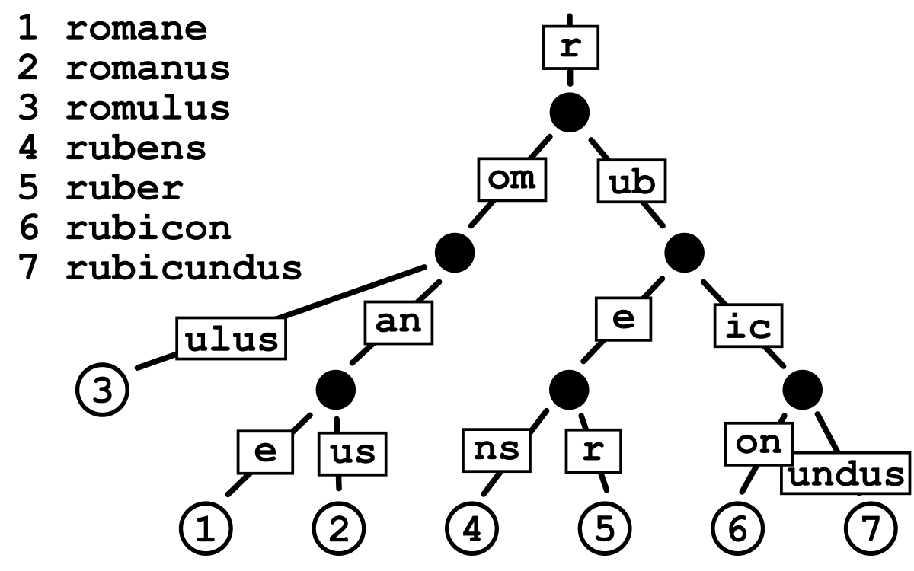

In the infrastructure of facebook network, the users receive nodtifications in high volume daily. Sorting of these notifications by time and priority can be done by Radix trees which will store and retrieve notifications based on the prefixes. This will ensure that users see the most relevant updates first leading to improve overall experience.
Radix trees are like organizing your notification preferences in a really smart way, especially when you have lots of categories or types of notifications. It helps quickly find what you're interested in without wasting time, perfect for managing notifications for many users efficiently.
 codelimitations
maintainence overload